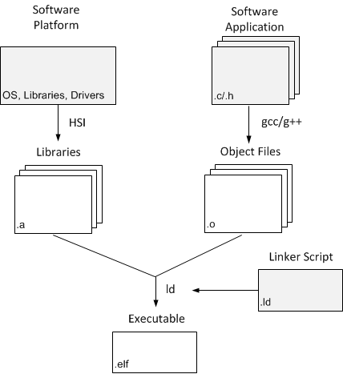

The software workflow in SDK is described in the following figure.

The first step in developing a software application is to create a Board Support Packages (SDK) that will be used by the application. Then, you can create an application project.
To build an executable for this application, SDK automatically performs the following actions. Configuration options can also be provided for these steps.
The following sections provide an overview of concepts involved in building applications.